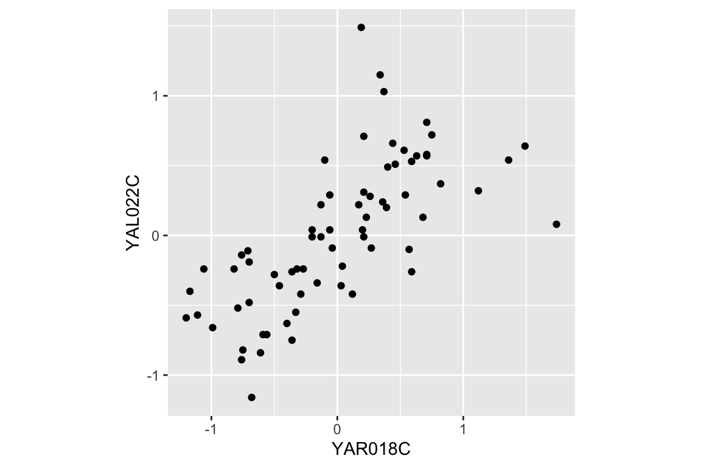

Chapter 9 Data wrangling, Part II
In our last class session we walked through a complex, data wrangling pipeline involving a genome-wide gene expression data set. Starting with the raw data, we demonstrated several cleaning, transformation, and reshaping steps that resulted in a data set that allowed us to examine how gene expression changed over time across multiple experimental conditions. The final form of our data was what we referred to as a “long” format. The key variables of the final data frame were gene, expt, time, and expression. The structure of this long data frame facilitated the creation of time series plots, filtering by gene and/or condition, grouping operations by gene, etc.
In today’s session we’re going to demonstrate a new type of visualization called a “heat map” that is useful for high dimensional data. Then we’ll show how to go convert our “long” data frame to a “wide” data frame, and show how this wide data frame facilitates analyses focused on how gene expression changes in concert (covary). We’ll also show how we can combine our long and wide views of the data to create new insights into interesting patterns in the data.
9.1 Libraries
9.2 Data
So we don’t have to re-create our previous analysis, I’ve posted a CSV file with the “long” version of the cleaned Spellman data set at the link given below:
Let’s remind ourselves of the basic structure of this data frame:
head(spellman.long)
#> # A tibble: 6 x 4
#> gene expt time expression
#> <chr> <chr> <int> <dbl>
#> 1 YAL001C alpha 0 -0.15
#> 2 YAL002W alpha 0 -0.11
#> 3 YAL003W alpha 0 -0.14
#> 4 YAL004W alpha 0 -0.02
#> 5 YAL005C alpha 0 -0.05
#> 6 YAL007C alpha 0 -0.6
dim(spellman.long)
#> [1] 450994 4There are just four columns (variables) in this data set, but more than 450,000 rows, representing all the various combinations of genes (>6000), experimental conditions (4), and time points (variable across experiments).
9.3 Heat maps
In our prior visualizations we’ve used line plots to depict how gene expression changes over time. For example here are line plots for 15 genes in the data set, in the cdc28 experimental conditions:
genes.of.interest <- c("YHR084W", "YBR083W", "YPL049C", "YDR480W",
"YGR040W", "YLR229C", "YDL159W", "YBL016W",
"YDR103W", "YJL157C", "YNL271C", "YDR461W",
"YHL007C", "YHR005C", "YJR086W")
spellman.long %>%
filter(expt == "cdc28", gene %in% genes.of.interest) %>%
ggplot(aes(x = time, y = expression, color=gene)) +
geom_line() +
labs(x = "Time (min)", y = "Expression")
Even with just 10 overlapping line plots, this figure is quite busy and it’s hard to make out the individual behavior of each gene.
An alternative approach to depicting such data is a “heat map” which depicts the same information in a grid like form, with the expression values indicated by color. Heat maps are good for depicting large amounts of data and providing a coarse “10,000 foot view”. We can create a heat map using geom_tile as follows:
spellman.long %>%
filter(expt == "cdc28", gene %in% genes.of.interest) %>%
ggplot(aes(x = time, y = gene)) +
geom_tile(aes(fill = expression)) +
xlab("Time (mins)")
This figure represents the same information as our line plot, but now there is row for each gene, and the expression of that gene at a given time point is represented by color (scale given on the right). Missing data is shown as gray boxes. Unfortunately, the default color scale used by ggplot is a very subtle gradient from light to dark blue. This make it hard to distinguish patterns of change. Let’s now see how we can improve that.
9.3.1 Better color schemes with RColorBrewer
The RColorBrewer packages provides nice color schemes that are useful for creating heat maps. RColorBrewer defines a set of color palettes that have been optimized for color discrimination, many of which are color blind friendly, etc. Install the RColorBrewer package using the command line or the RStudio GUI.
Once you’ve installed the RColorBrewer package you can see the available color palettes as so:
library(RColorBrewer)
# show representations of the palettes
par(cex = 0.5) # reduce size of text in the following plot
display.brewer.all() 
We’ll use the Red-to-Blue (“RdBu”) color scheme defined in RColorBrewer, however we’ll reverse the scheme so blues represent low expression and reds represent high expression. We’ll divide the range of color values into 9 discrete bins.

Now let’s regenerate the heat map we created previously with this new color scheme. To do this we specify a gradient color scale using the scale_fill_gradientn() function from ggplot. In addition to specifying the color scale, we also constrain the limits of the scale to insure it’s symmetric about zero.
spellman.long %>%
filter(expt == "cdc28", gene %in% genes.of.interest) %>%
ggplot(aes(x = time, y = gene)) +
geom_tile(aes(fill = expression)) +
scale_fill_gradientn(colors=color.scheme,
limits = c(-2.5, 2.5)) +
xlab("Time (mins)")
9.3.2 Looking for patterns using sorted data and heat maps
The real power of heat maps becomes apparent when you you rearrange the rows of the heat map to emphasize patterns of interest.
For example, let’s create a heat map in which we sort genes by the time of their maximal expression. This is one way to identify genes that reach their peak expression at similar times, which is one criteria one might use to identify genes acting in concert.
For simplicities sake we will restrict our attention to the cdc28 experiment, and only consider the 1000 most variables genes with no more than one missing observation in this experimental condition.
cdc28 <-
spellman.long %>%
filter(expt == "cdc28") %>%
group_by(gene) %>%
filter(sum(is.na(expression)) <= 1) %>%
ungroup # removes grouping information from data frame
top1k.genes <-
cdc28 %>%
group_by(gene) %>%
summarize(expression.var = var(expression, na.rm = TRUE)) %>%
arrange(desc(expression.var)) %$%
gene[1:1000]
top1k.cdc28 <-
cdc28 %>%
filter(gene %in% top1k.genes)To find the time of maximum expression we’ll employ the function which.max (which.min), which finds the index of the maximum (minimum) element of a vector. For example to find the index of the maximum expression measurement for YAR018C we could do:
top1k.cdc28 %>%
filter(gene == "YAR018C") %$% # note the exposition pipe operator!
which.max(expression)
#> [1] 8From the code above we find that the index of the observation at which YAR018C is maximal at 8. To get the corresponding time point we can do something like this:
top1k.cdc28 %>%
filter(gene == "YAR018C") %$% # again note the exposition pipe operator!
time[which.max(expression)]
#> [1] 70Thus YAR018C expression peaks at 70 minutes in the cdc28 experiment.
To find the index of maximal expression of all genes we can apply the dplyr::group_by() and dplyr::summarize() functions
peak.expression.cdc28 <-
top1k.cdc28 %>%
group_by(gene) %>%
summarise(peak = which.max(expression))
head(peak.expression.cdc28)
#> # A tibble: 6 x 2
#> gene peak
#> <chr> <int>
#> 1 YAL003W 10
#> 2 YAL005C 2
#> 3 YAL022C 17
#> 4 YAL028W 5
#> 5 YAL035C-A 12
#> 6 YAL038W 15Let’s sort the order of genes by their peak expression:
We can then generate a heatmap where we sort the rows (genes) of the heatmap by their time of peak expression. We introduce a new geom – geom_raster – which is like geom_tile but better suited for large data (hundreds to thousands of rows)
The explicit sorting of the data by peak expression is carried out in the call to scale_y_discrete() where the limits (and order) of this axis are set with the limits argument (see scale_y_discrete and discrete_scale in the ggplot2 docs).
# we reverse the ordering because geom_raster (and geom_tile)
# draw from the bottom row up, whereas we want to depict the
# earliest peaking genes at the top of the figure
gene.ordering <- rev(peak.expression.cdc28$gene)
top1k.cdc28 %>%
ggplot(aes(x = time, y = gene)) +
geom_raster(aes(fill = expression)) + #
scale_fill_gradientn(limits=c(-2.5, 2.5),
colors=color.scheme) +
scale_y_discrete(limits=gene.ordering) +
labs(x = "Time (mins)", y = "Genes",
title = "1000 most variable genes",
subtitle = "Sorted by time of peak expression") +
# the following line suppresses tick and labels on y-axis
theme(axis.text.y = element_blank(), axis.ticks.y = element_blank())
Figure 9.1: A Heatmap showing genes in the cdc28 experiment, sorted by peak expression
The brightest red regions in each row of the heat map correspond to the times of peak expression, and the sorting of the rows helps to highlight those gene whose peak expression times are similar.
9.4 Long-to-wide conversion using tidyr::spread
Our long data frame consists of four variables – gene, expt, time, and expression. This made it easy to create visualizations and summaries where time and expression were the primaries variables of interest, and gene and experiment type were categories we could condition on.
To facilitate analyses that emphasize comparison between genes, we want to create a new data frame in which each gene is itself treated as a variable of interest along with time, and experiment type remains a categorical variable. In this new data frame rather than just four columns in our data frame, we’ll have several thousand columns – one for each gene.
To accomplish this reshaping of data, we’ll use the function tidyr::spread(). tidyr::spread() is the inverse of tidyr::gather(). gather() took multiple columns and collapsed them together into a smaller number of new columns. The tidyr documentation calls this “collapsing into key-value pairs”. By contrast, spread() creates new columns by spreading “key-value pairs” (a column representing the “keys” and a column reprsenting the “values”) into multiple columns.
Here let’s use spread() to use the gene names (the “key”) and expression measures (the “values”) to create a new data frame where the genes are the primary variables (columns) of the data.
Now let’s examine the dimensions of this wide version of the data:
And here’s a visual view of the first few rows and columns of the wide data:
spellman.wide[1:5, 1:8]
#> # A tibble: 5 x 8
#> expt time YAL001C YAL002W YAL003W YAL004W YAL005C YAL007C
#> <chr> <int> <dbl> <dbl> <dbl> <dbl> <dbl> <dbl>
#> 1 alpha 0 -0.15 -0.11 -0.14 -0.02 -0.05 -0.6
#> 2 alpha 7 -0.15 0.1 -0.71 -0.48 -0.53 -0.45
#> 3 alpha 14 -0.21 0.01 0.1 -0.11 -0.47 -0.13
#> 4 alpha 21 0.17 0.06 -0.32 0.12 -0.06 0.35
#> 5 alpha 28 -0.42 0.04 -0.4 -0.03 0.11 -0.01From this view we infer that the rows of the data set represent the various combination of experimental condition and time points, and the columns represents the 6178 genes in the data set plus the two columns for expt and time.
9.5 Exploring bivariate relationships using “wide” data
The “long” version of our data frame proved useful for exploring how gene expression changed over time. By contrast, our “wide” data frame is more convient for exploring how pairs of genes covary together. For example, we can generate bivariate scatter plots depicting the relationship between two genes of interest:
two.gene.plot <-
spellman.wide %>%
filter(!is.na(YAR018C) & !is.na(YAL022C)) %>% # remove NAs
ggplot(aes(x = YAR018C, y = YAL022C)) +
geom_point() +
theme(aspect.ratio = 1)
two.gene.plot
From the scatter plot we infer that the two genes are “positively correlated” with each other, meaning that high values of one tend to be associated with high values of the other (and the same for low values).
We can easily extend this visualization to facet the plot based on the experimental conditions:

A statistic we use to measure the degree of association between pairs of continuous variables is called the “correlation coefficient”. Briefly, correlation is a measure of linear association between a pair of variables, and ranges from -1 to 1. A value near zero indicates the variables are uncorrelated (no linear association), while values approaching +1 indicate a strong positive association (the variables tend to get bigger or smaller together) while values near -1 indicate strong negative association (when one variable is larger, the other tends to be small).
Let’s calculate the correlation between YAR018C and YAL022C:
spellman.wide %>%
filter(!is.na(YAR018C) & !is.na(YAL022C)) %>%
summarize(cor = cor(YAR018C, YAL022C))
#> # A tibble: 1 x 1
#> cor
#> <dbl>
#> 1 0.6915The value of the correlation coefficient for YAR018C and YAL022C, ~0.69, indicates a fairly strong association between the two genes.
As we did for our visualization, we can also calculate the correlation coefficients for the two genes under each experimental condition:
spellman.wide %>%
filter(!is.na(YAR018C) & !is.na(YAL022C)) %>%
group_by(expt) %>%
summarize(cor = cor(YAR018C, YAL022C))
#> # A tibble: 4 x 2
#> expt cor
#> <chr> <dbl>
#> 1 alpha 0.6341
#> 2 cdc15 0.5751
#> 3 cdc28 0.8474
#> 4 elu 0.7867This table suggests that the the strength of correlation between YAR018C and YAL022C may depend on the experimental conditions, with the highest correlations evident in the cdc28 and elu experiments.
9.5.1 Large scale patterns of correlations
Now we’ll move from considering the correlation between two specific genes to looking at the correlation between many pairs of genes. As we did in the previous section, we’ll focus specifically onthe 1000 most variable genes in the cdc28 experiment.
First we filter our wide data set to only consider the cdc28 experiment and those genes in the top 1000 most variable genes in cdc28:
With this restricted data set, we can then calculate the correlations between every pair of genes as follows:
cdc28.correlations <-
top1k.cdc28.wide %>%
select(-expt, -time) %>% # drop expt and time
cor(use = "pairwise.complete.obs")The argument use = "pairwise.complete.obs" tells the correlation function that for each pair of genes to use only the pariwse where there is a value for both genes (i.e. neither one can be NA).
Given \(n\) genes, there are \(n \times n\) pairs of correlations, as seen by the dimensions of the correlation matrix.
To get the correlations with a gene of interest, we can index with the gene name on the rows of the correlation matrix. For example, to get the correlations between the gene YAR018C and the first 10 genes in the top 1000 set:
cdc28.correlations["YAR018C",1:10]
#> YAL003W YAL005C YAL022C YAL028W YAL035C-A YAL038W
#> 0.07100626 -0.53315493 0.84741624 0.33379901 -0.22316755 -0.03984599
#> YAL044C YAL048C YAL060W YAL062W
#> 0.32253692 0.12220221 0.49445700 -0.60972118In the next statement we extract the names of the genes that have correlations with YAR018C greater than 0.6. First we test genes to see if they have a correlation with YAR018C greater than 0.6, which returns a vector of TRUE or FALSE values. This vector of Boolean values is than used to index into the rownames of the correlation matrix, pulling out the gene names where the statement was true.
pos.corr.YAR018C <- rownames(cdc28.correlations)[cdc28.correlations["YAR018C",] > 0.6]
length(pos.corr.YAR018C)
#> [1] 65We then return to our long data to show this set of genes that are strongly positively correlated with YAR018C.
top1k.cdc28 %>%
filter(gene %in% pos.corr.YAR018C) %>%
ggplot(aes(x = time, y = expression, group = gene)) +
geom_line(alpha = 0.33) +
theme(legend.position = "none")
As is expected, genes with strong positive correlations with YAR018C. show similar temporal patterns with YAR018C.
We can similarly filter for genes that have negative correlations with YAR018C.
As before we generate a line plot showing these genes:
top1k.cdc28 %>%
filter(gene %in% neg.corr.YAR018C) %>%
ggplot(aes(x = time, y = expression, group = gene)) +
geom_line(alpha = 0.33) +
theme(legend.position = "none") 
9.5.2 Adding new columns and combining filtered data frames
Now let’s create a new data frame by: 1) filtering on our list of genes that have strong positive and negative correlations with YAR018C; and 2) creating a new variable, “corr.with.YAR018C”, which indicates the sign of the correlation. We’ll use this new variable to group genes when we create the plot.
pos.corr.df <-
top1k.cdc28 %>%
filter(gene %in% pos.corr.YAR018C) %>%
mutate(corr.with.YAR018C = "positive")
neg.corr.df <-
top1k.cdc28 %>%
filter(gene %in% neg.corr.YAR018C) %>%
mutate(corr.with.YAR018C = "negative")
combined.pos.neg <- rbind(pos.corr.df, neg.corr.df)Finally, we plot the data, colored according to the correlation with YAR018C:
ggplot(combined.pos.neg,
aes(x = time, y = expression, group = gene,
color = corr.with.YAR018C)) +
geom_line(alpha=0.25) +
geom_line(aes(x = time, y = expression),
data = filter(top1k.cdc28, gene == "YAR018C"),
color = "DarkRed", size = 2,alpha=0.5) +
# changes legend title and values for color sclae
scale_color_manual(name = "Correlation with YAR018C",
values = c("blue", "red")) +
labs(title = "Genes strongly positively and negatively correlated with YAR018C",
subtitle = "YAR018C shown in dark red",
x = "Time (mins)", y = "Expression")
9.5.3 A heat mapped sorted by correlations
In our previous heat map example figure, we sorted genes according to peak expression. Now let’s generate a heat map for the genes that are strongly correlated (both positive and negative) with YAR018C. We will sort the genes according to the sign of their correlation.
# re-factor gene names so positive and negative genes are spatially distinct in plot
combined.pos.neg$gene <-
factor(combined.pos.neg$gene,
levels = c(pos.corr.YAR018C, neg.corr.YAR018C))
combined.pos.neg %>%
ggplot(aes(x = time, y = gene)) +
geom_tile(aes(fill = expression)) +
scale_fill_gradientn(colors=color.scheme) +
xlab("Time (mins)")The breakpoint between the positively and negatively correlated sets of genes is quite obvious in this figure.
9.5.4 A “fancy” figure
Recall that we introduced the cowplot library in Chapter 6, as a way to combine different ggplot outputs into subfigures such as you might find in a published paper. Here we’ll make further use cowplot to combine our heat map and line plot visualizations of genes that covary with YAR018C.
cowplot’s draw_plot() function allows us to place plots at arbitrary locations and with arbitrary sizes onto the canvas. The coordinates of the canvas run from 0 to 1, and the point (0, 0) is in the lower left corner of the canvas. We’ll use draw_plot to draw a complex figure with a heatmap on the left, and two smaller line plots on the right.
pos.corr.lineplot <-
combined.pos.neg %>%
filter(gene %in% pos.corr.YAR018C) %>%
ggplot(aes(x = time, y = expression, group = gene)) +
geom_line(alpha = 0.33, color = 'red') +
labs(x = "Time (mins)", y = "Expression",
title = "Genes Positively correlated\nwith YAR018C")
neg.corr.lineplot <-
combined.pos.neg %>%
filter(gene %in% neg.corr.YAR018C) %>%
ggplot(aes(x = time, y = expression, group = gene)) +
geom_line(alpha = 0.33, color = 'blue') +
labs(x = "Time (mins)", y = "Expression",
title = "Genes negatively correlated\nwith YAR018C")
heat.map <-
ggplot(combined.pos.neg, aes(x = time, y = gene)) +
geom_tile(aes(fill = expression)) +
scale_fill_gradientn(colors=color.scheme) +
labs(x = "Time (mins)", y = "Gene") +
theme(legend.position = "none")The coordinates of the canvas run from 0 to 1, and the point (0, 0) is in the lower left corner of the canvas. We’ll use draw_plot to draw a complex figure with a heatmap on the left, and two smaller line plots on the right.
I determined the coordinates below by experimentation to create a visually pleasing layout.
fancy.plot <- ggdraw() +
draw_plot(heat.map, 0, 0, width = 0.6) +
draw_plot(neg.corr.lineplot, 0.6, 0.5, width = 0.4, height = 0.5) +
draw_plot(pos.corr.lineplot, 0.6, 0, width = 0.4, height = 0.5) +
draw_plot_label(c("A", "B", "C"), c(0, 0.6, 0.6), c(1, 1, 0.5), size = 15)
fancy.plot